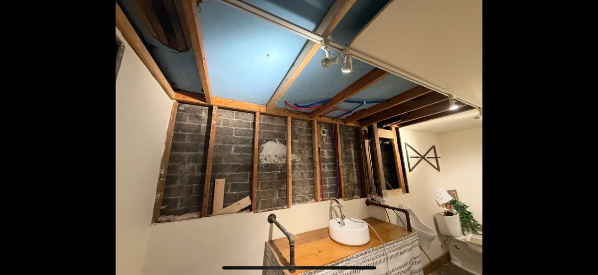

EMERGENCY · 24/7

Service 01
Water Damage Restoration
Burst pipes, floods, sewage and storm intrusion across Federal Way. We extract standing water, dry the structure, and treat for mold — usually same-day on-site.
- 24/7 emergency dispatch & water extraction
- Structural drying & moisture mapping
- Antimicrobial & mold treatment
- Direct-to-insurance documentation